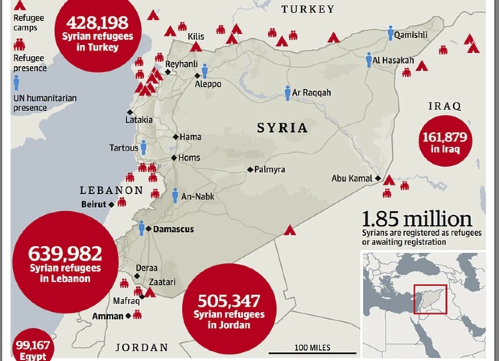

Medical Aid and Support for Syria
We are a group of medical and healthcare qualified individuals trying to help those in need affected by the civil war in Syria, due to the destruction of hospitals and healthcare infrastructure.
Our goal is to purchase medical equipment and treatments which will then be sent on to the relevant organisations to help their clinics and help those in need, those who are disabled or have other medical problems.
We aim to target primarily Syrian people, regardless of denomination and religion, who are either inside Syria or refugees in other neighbouring countries: Lebanon, Jordan and Turkey.
